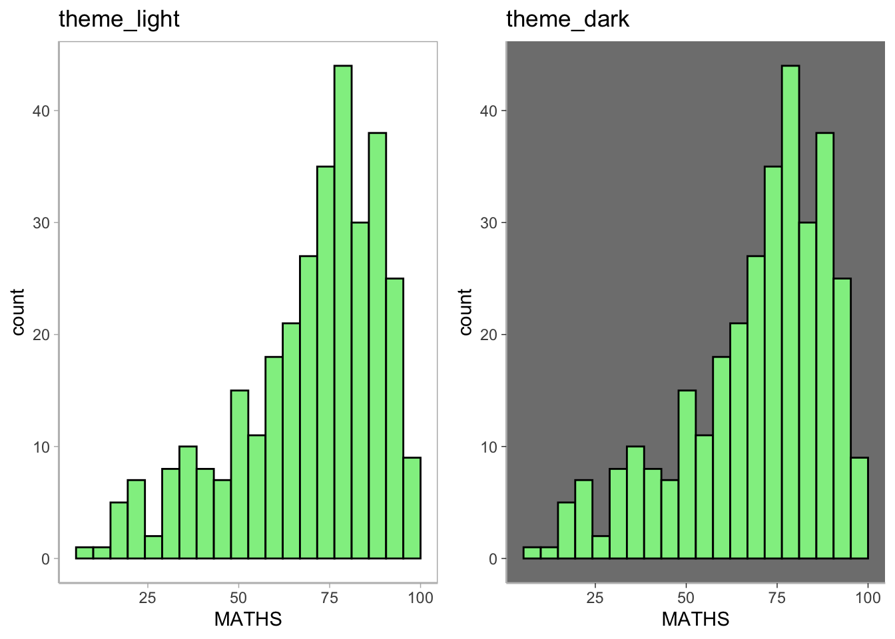

pacman::p_load(ggrepel, patchwork, ggthemes, hrbrthemes, tidyverse) Extensions of ggplot2

1 Learning Objectives
- Annotate or label data using
ggrepelpackage - Create publication quality figure by using
ggthemesandhrbrthemespackages - Plot composite figure to combine ggplot2 graphs using
patchworkpackage
2 Load Packages
Beside tidyverse, the following R packages will be used:
ggrepelprovides geoms to repel overlapping text labelsggthemesprovides themes, geoms, and scaleshrbrthemesprovides typography-centric themes and theme componentspatchworkprepares composite figures
3 Import Data
exam_data is a year end examination grades of a cohort of Primary 3 students from a local school.
The output shows a total of seven attributes; four of them are categorical attributes (ID, CLASS, GENDER and RACE) and the other three are continuous attributes (MATHS, ENGLISH and SCIENCE).
exam_data <- read.csv("data/Exam_data.csv")
summary(exam_data) ID CLASS GENDER RACE
Length:322 Length:322 Length:322 Length:322
Class :character Class :character Class :character Class :character
Mode :character Mode :character Mode :character Mode :character
ENGLISH MATHS SCIENCE
Min. :21.00 Min. : 9.00 Min. :15.00
1st Qu.:59.00 1st Qu.:58.00 1st Qu.:49.25
Median :70.00 Median :74.00 Median :65.00
Mean :67.18 Mean :69.33 Mean :61.16
3rd Qu.:78.00 3rd Qu.:85.00 3rd Qu.:74.75
Max. :96.00 Max. :99.00 Max. :96.00 4 Annotate Data using ggrepel
ggrepel is an extension of ggplot2 package which provides geoms for ggplot2 to repel overlapping text.
We simply replace geom_text() by geom_text_repel() and geom_label() by geom_label_repel.
ggplot(data = exam_data,
aes(x = MATHS,
y = ENGLISH)) +
geom_point() +
geom_smooth(method=lm,
size=0.5) +
geom_label(aes(label = ID),
hjust = 0.5,
vjust = -0.5) +
coord_cartesian(xlim=c(0,100),
ylim=c(0,100)) +
ggtitle("English and Maths Scores using Scatterplot")+
theme_minimal()+
theme(legend.position = "none",
panel.grid.major = element_blank(),
panel.grid.minor = element_blank(),
axis.line = element_line(colour = "grey"))Warning: Using `size` aesthetic for lines was deprecated in ggplot2 3.4.0.
ℹ Please use `linewidth` instead.`geom_smooth()` using formula = 'y ~ x'ggrepel
ggplot(data = exam_data,
aes(x = MATHS,
y = ENGLISH)) +
geom_point() +
geom_smooth(method = lm,
size = 0.5) +
geom_label_repel(aes(label = ID),
fontface = "bold") +
coord_cartesian(xlim=c(0,100),
ylim=c(0,100)) +
ggtitle("English and Maths Scores using Scatterplot (ggrepel)")+
theme_minimal()+
theme(legend.position = "none",
panel.grid.major = element_blank(),
panel.grid.minor = element_blank(),
axis.line = element_line(colour = "grey"))`geom_smooth()` using formula = 'y ~ x'Warning: ggrepel: 317 unlabeled data points (too many overlaps). Consider
increasing max.overlaps
Warning: ggrepel: 318 unlabeled data points (too many overlaps). Consider increasing max.overlaps